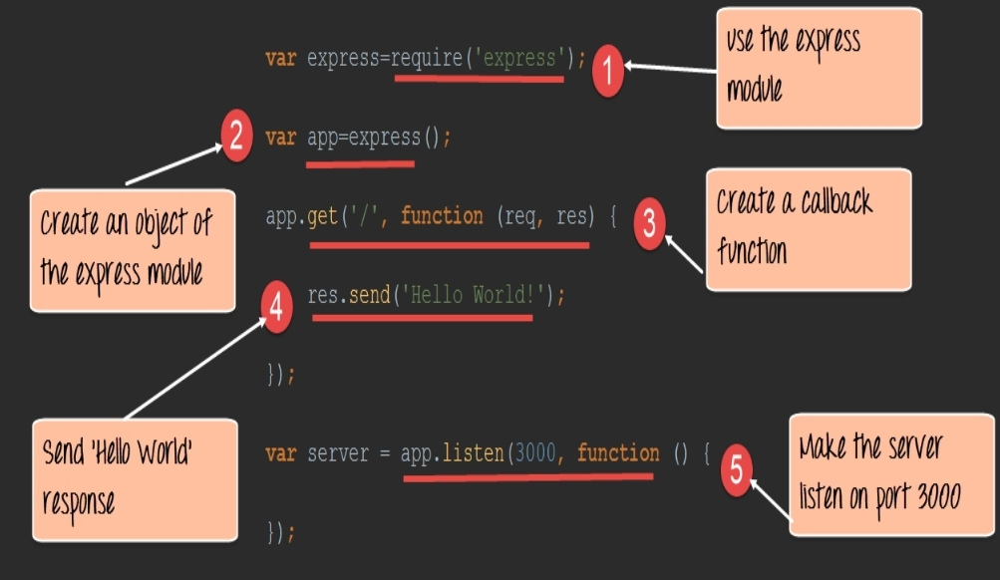
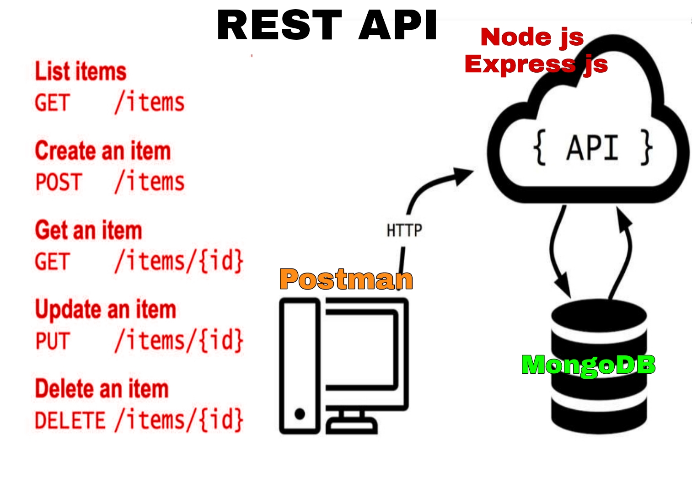

REST API
This project aims at building an inventory tracking system for ventilators that allows authorized hospital users to input details of the available inventory and tag it as “occupied”, “available” and “in-maintenance”. The three status can also be updated using a secure API for real time usage metrics. The application should have the ability to also add any ventilator to a specific hospital and search ventilators which are available.
With this API we can
- Read Hospital and Ventilator Details
- Search Ventilators by status and Hospital name
- Search Hospital by name
- Update Ventilators Detatils
- Add Ventilators
- Delete Ventilator by Ventilator ID
Technologies and Tools I used
- For storing Hospital and Ventilator Details I used Mongodb
- Brower only support GET and POST requests But I want to perform GET,POST,PATCH,DELETE so I used Postman
- Node.js for JavaScript run time Environnment
- Express.js
- Mongoose used to interact with MongoDb
- Nodemon is used instead of node to run code, so process will automatically restart when we make any code changes
MongoDb
1.Instead of using tables and rows as in the traditional relational databases, MongoDB makes use of collections and documents. Documents consist of key-value pairs which are the basic unit of data in MongoDB.
2.So It is a No SQL and document-oriented database
3.Data is stored in MongoDB in the form of JSON Style.
4.JSON is simple structure and very easy to understand the content.
5.JSON is smaller, faster and lightweight.
6.To interact with MongoDB Mongoose is used
7.It is an Object Data Modeling(ODM) library for MongoDB
8.Using mongoose ,a user can define the schema for the document in a particular coillection
Node js
It is Run Time Environnment for Executing JavaScript code
Node is Ideal for I/O intensive applications
Node Applications are Asynchronous by default

Express js
Express.js is a js web application server framework
Example:
REST
REST stands for REpresentational State Transfer. REST is web standards based architecture and uses HTTP Protocol. It is an architectural style as well as an approach for communications purposes that is often used in various web services development. A REST Server simply provides access to resources and REST client accesses and modifies the resources using HTTP protocol.
